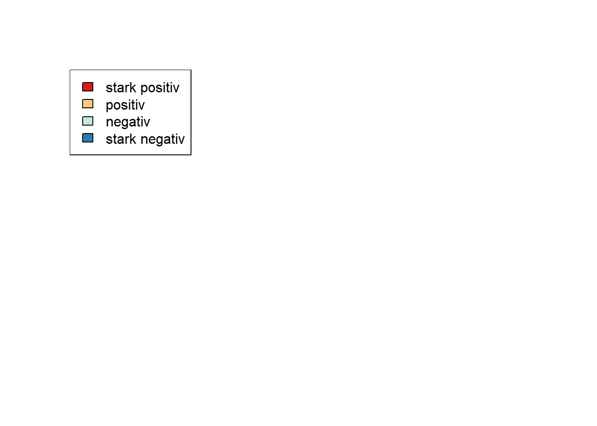
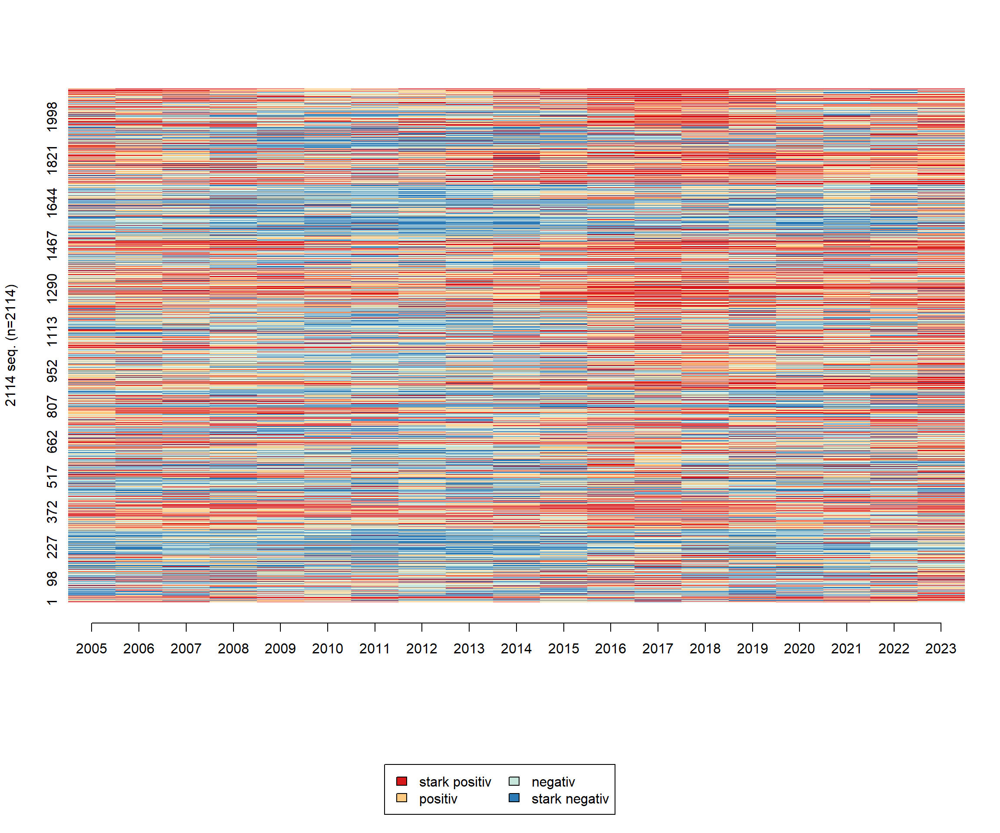
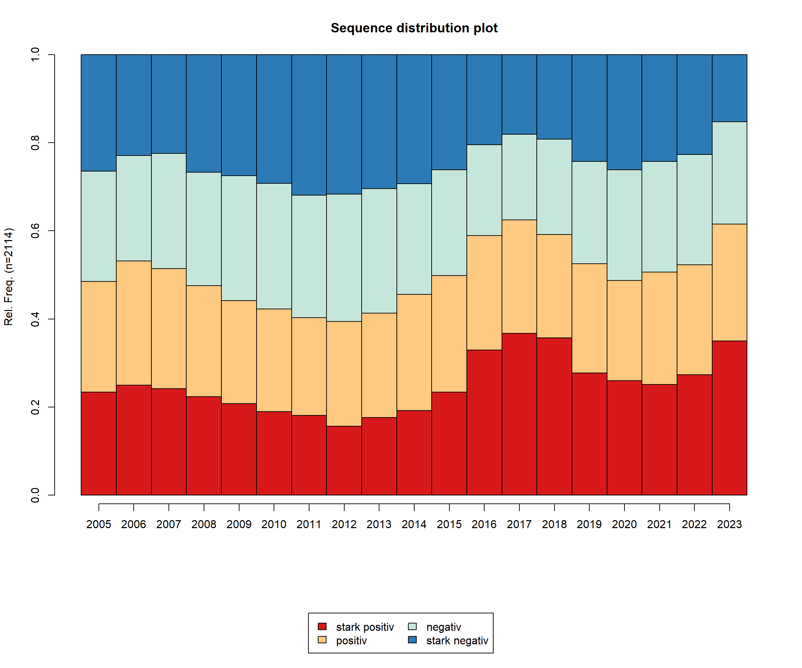
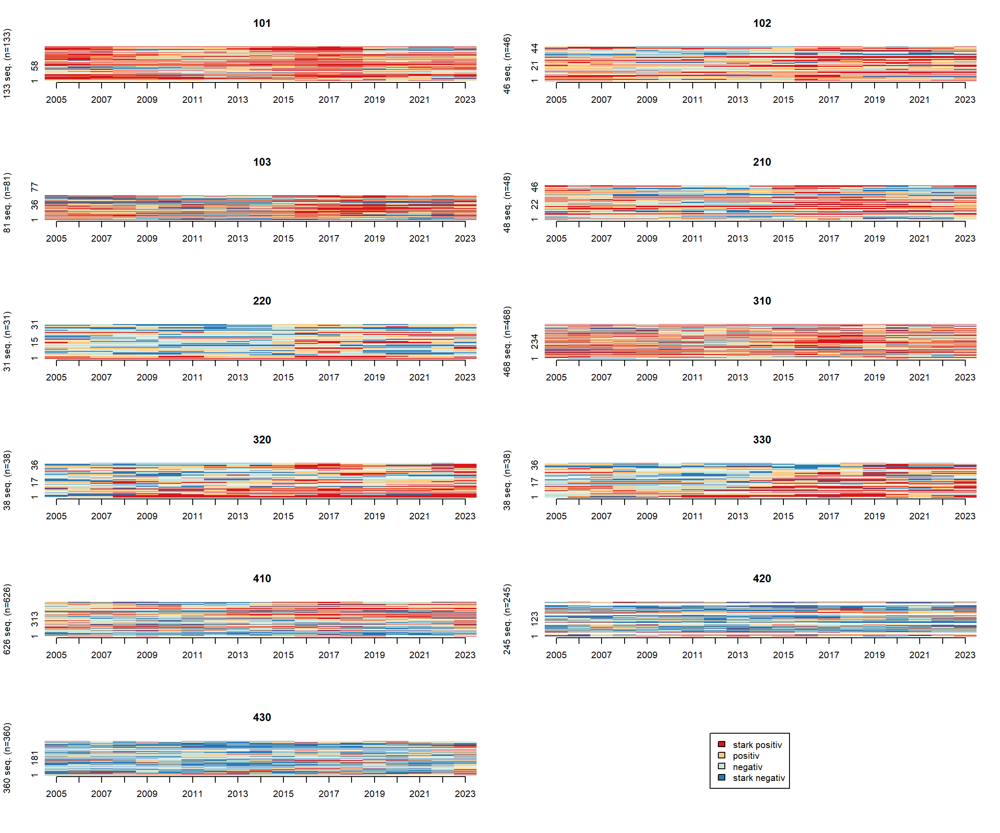
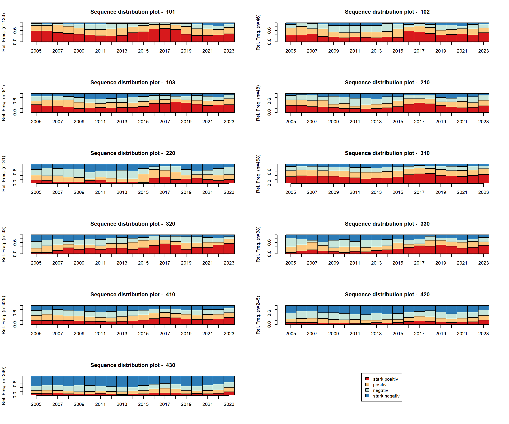
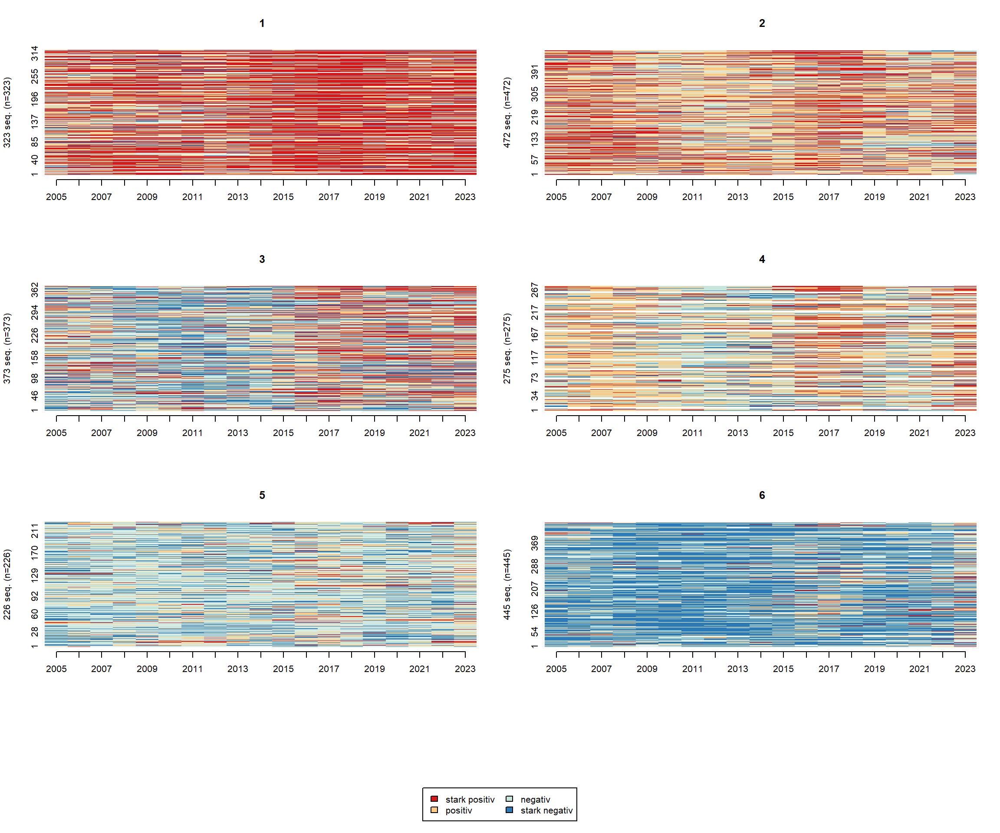
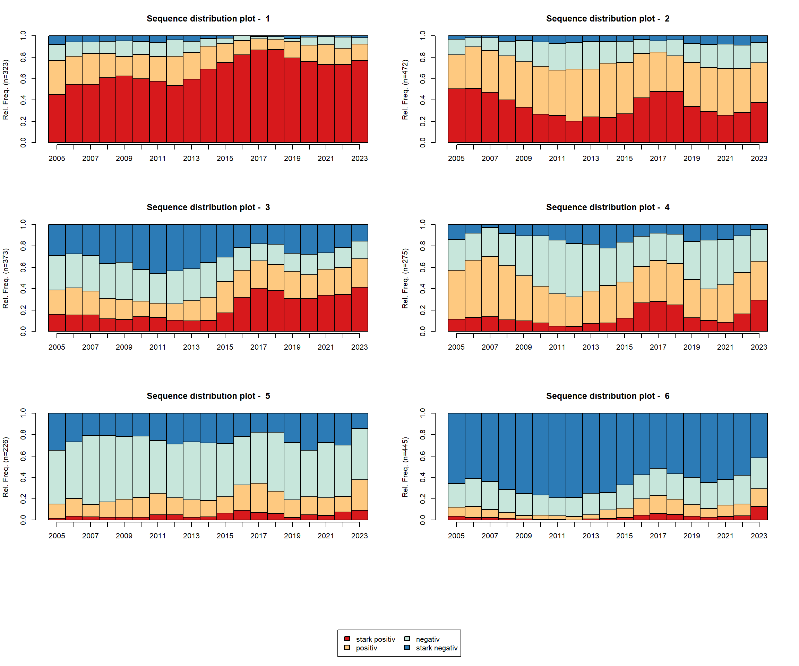

Die Sequenzanalyse ist eine Methode zur Untersuchung von Abfolgen kategorialer Zustände über die Zeit. Im Unterschied zu klassischen statistischen Ansätzen betrachtet sie nicht nur, welche Ereignisse auftreten, sondern auch in welcher Reihenfolge und Dauer sie stattfinden. Dadurch lassen sich typische Verlaufsformen – etwa von Bildungs-, Erwerbs- oder Mobilitätsbiographien – sichtbar machen und miteinander vergleichen. Ebenfalls können kategorisierte Bevölkerungsveränderungen zwischen statistischen Einheiten verglichen werden.
Typische Fragestellungen, bei denen eine Sequenzanalyse sinnvoll sein kann:
Welche typischen Verlaufsformen lassen sich in den Daten erkennen, und wie unterscheiden sich diese zwischen statistischen Einheiten? Können darin typische Verlaufsmuster erkannt werden?
3.2. Was ist eine Sequenz?
Eine Sequenz ist eine geordnete Folge von Zuständen oder Ereignissen, die eine Einheit (z. B. eine Person oder Gemeinde) über mehrere Zeitpunkte hinweg durchläuft.
In diesem Beispiel wären x1, x3, x4 Zustände. Die statistische Einheit (observation) durchläuft diese Zustände im Zeitverlauf.
3.3. Kategorisierung von Bevölkerungsveränderungsraten
Ziel in diesem Skript-Abschnitt ist es, die Bevölkerungsveränderungsraten auf Gemeindeebene zu kategorisieren und deren Ablauf mittels einer Sequenzanalyse zu vergleichen.
Wir berechnen zunächst erneut die jährliche Bevölkerungsveränderungsrate, diesmal für jede Gemeinde. Da die Raten auf Gemeindebene sehr stark fluktuieren können (zB. Eröffnung eines Pflegeheimes) verwenden wir einen rollenden Mittelwert als “smoothing” Technik.
Die Tabelle wird nach Gemeinde und Jahr sortiert, und mit rollapply() wird für jede Gemeinde ein 3-Jahres-Rolling Mean der Bevölkerungsraten berechnet (rate_roll3), wobei die Mittelwerte jeweils die aktuellen und zwei vorhergehenden Jahre umfassen (align = "right"). Am Ende werden noch fehlende Werte entfernt und die Daten wieder entgruppiert, sodass die rollenden Mittelwerte bereit für die Kategorisierung sind.
Der Code teilt die zuvor berechneten 3-Jahres-Rolling Means der Bevölkerungsraten (rate_roll3) in vier Kategorien ein. Mit ntile(..., 4) werden die Werte in Quartile unterteilt, sodass jede Kategorie etwa ein Viertel der Daten enthält. Anschließend werden die numerischen Quartile in lesbare Labels umgewandelt (stark negativ bis stark positiv), sodass die Ergebnisse leichter interpretierbar und für Visualisierungen nutzbar sind.
Mit table(seq_dta$rate_quartile) wird schließlich die Häufigkeitsverteilung der Kategorien angezeigt, sodass man schnell sehen kann, wie viele Beobachtungen in jede Gruppe fallen.
summary(seq_dta$rate_roll3)
Min. 1st Qu. Median Mean 3rd Qu. Max.
-16.1922 -0.3777 0.2104 0.2639 0.8357 14.0328
Der folgende Code erstellt eine Sequenzanalyse für die Spalten 3 bis 21 im Datensatz seq, die beispielsweise jährliche Veränderungen oder Ratings abbilden. Zunächst werden die Zustände der Sequenzen definiert: seq.scode kodiert sie intern als "HG", "G", "D" und "HD", während seq.alphabet und seq.labels für die lesbaren Bezeichnungen sorgen („stark positiv“ bis „stark negativ“). Mit seqdef() werden die Daten als Sequenzen vorbereitet, inklusive Farben für die Visualisierung (seq.cpal1), sodass jeder Zustand konsistent dargestellt wird.
Anschließend erlaubt der Code eine erste Exploration der Sequenzen: seqstatl() zeigt die Häufigkeit der Zustände über die Zeit, print() und summary() geben Übersicht über die Sequenzen einzelner Gemeinden und deren statistische Zusammenfassung, und seqlegend() erzeugt eine Legende, die die Farben den Zuständen zuordnet. So können Studierende schnell sehen, wie sich Zustände über die Zeit verteilen und Muster in den Sequenzen erkennen.
[>] sequence object created with TraMineR version 2.2-8
[>] 2114 sequences in the data set, 2072 unique
[>] min/max sequence length: 19/19
[>] alphabet (state labels):
1=HG (stark positiv)
2=G (positiv)
3=D (negativ)
4=HD (stark negativ)
[>] dimensionality of the sequence space: 57
[>] colors: 1=#d7191c 2=#fec980 3=#c7e6db 4=#2c7bb6
seqlegend(seq.df)

seqiplot(seq.df, border=NA, idxs=1:2114)

seqdplot(seq.df, main ="Sequence distribution plot", border=T)

seqiplot(seq.df, border=NA, group = seq$Wert, idxs=1:2114)

seqdplot(seq.df, main ="Sequence distribution plot", group = seq$Wert, border=T)

seqfplot(seq.df, main ="Sequence frequency plot", group = seq$Wert, border=T)
3.4. Berechnung von Distanzmaßen mit Optimal Matching
Optimal Matching (OM) ist eine Methode der Sequenzanalyse, die die Ähnlichkeit zwischen zeitlich geordneten Ereignisfolgen misst.
Konkret vergleicht OM zwei Sequenzen, indem es die minimale „Bearbeitungskosten“-Summe berechnet, die nötig ist, um die eine Sequenz in die andere zu überführen. Dabei werden drei Arten von Operationen erlaubt:
Insertion – Einfügen eines Zustands
Deletion – Löschen eines Zustans
Substitution – Ersetzen eines Zustands durch einen anderen
Jede Operation wird mit einer Kostenfunktion versehen, sodass Sequenzen, die ähnlich verlaufen, geringere Gesamtkosten haben. Die resultierende Distanzmatrix kann anschließend für Clusteranalysen, Multidimensionale Skalierung (MDS) oder Visualisierung von Sequenzmustern verwendet werden.
OM quantifiziert, wie „nah“ zwei zeitliche Abläufe beieinanderliegen, und erlaubt so die Analyse von typischen Mustern und Abweichungen in Sequenzdaten.
Clustering ist ein Verfahren, bei dem Beobachtungen in Gruppen (Cluster) eingeteilt werden, sodass die Objekte innerhalb eines Clusters möglichst ähnlich und zwischen Clustern möglichst unterschiedlich sind.
Ward’s Methode ist eine spezielle Form des hierarchischen Clustering. Sie arbeitet nach dem Prinzip, dass in jedem Schritt die beiden Cluster zusammengeführt werden, deren Zusammenfassung die geringste Zunahme der Gesamtsumme der quadrierten Abweichungen (Within-Cluster-Variance) verursacht. Anders gesagt: Ward sucht immer die Kombination, die die homogensten Gruppen erzeugt.
Tendenziell erzeugt dieser Clustering-Algorithmus ähnlich große und kompakte Cluster, was die Interpretation von Gruppenmustern erleichtert.
wardcluster_OM <-hclust(as.dist(dist.om), method ="ward.D")k <-6groups.om <-cutree(wardcluster_OM, k = k)seqiplot(seq.df, border=NA, group = groups.om, idxs=1:2114)

seqdplot(seq.df, main ="Sequence distribution plot", group = groups.om, border=T)

seqfplot(seq.df, main ="Sequence frequency plot", group = groups.om, border=T)